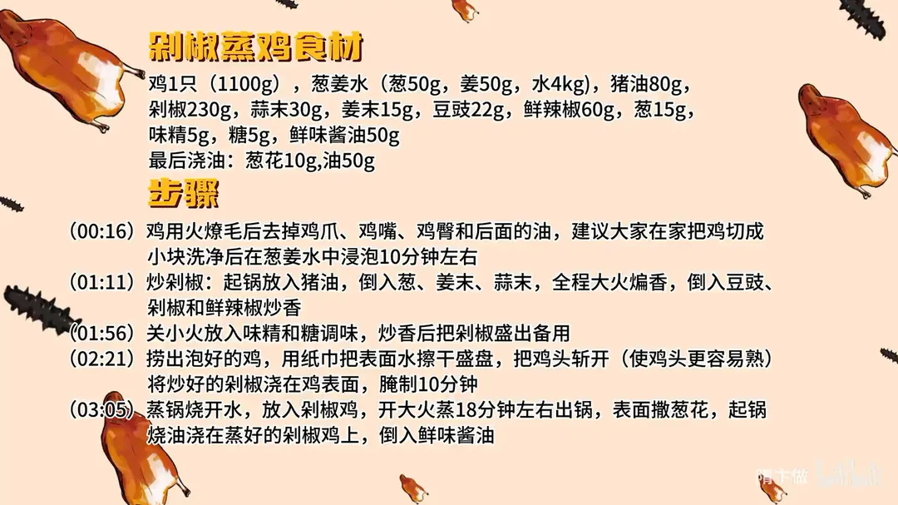

剁椒蒸鸡
隋卞一做。整鸡 1100g 燎毛去爪、切块后用葱姜水泡 10 分钟去腥。猪油 80g 大火炒香剁椒 230g，浇在鸡身上腌 10 分钟，上汽后大火蒸 18 分钟，最后泼 50g 热油、淋鲜味酱油。
原视频：https://www.bilibili.com/video/BV1Dx4y1Y7CR
食材
鸡、剁椒、猪油 等 16 样
| 类别 | 用料 | 用量 |
|---|---|---|
| 主料 | 鸡 | 1只（1100g） |
| 腌料 | 葱 | 50g |
| 腌料 | 姜 | 50g |
| 腌料 | 水 | 4kg |
| 配料 | 猪油 | 80g |
| 配料 | 剁椒 | 230g |
| 配料 | 蒜末 | 30g |
| 配料 | 姜末 | 15g |
| 配料 | 豆豉 | 22g |
| 配料 | 鲜辣椒 | 60g |
| 配料 | 葱 | 15g |
| 调料 | 味精 | 5g |
| 调料 | 糖 | 5g |
| 调料 | 鲜味酱油 | 50g |
| 调料 | 葱花 | 10g |
| 调料 | 浇油 | 50g |
步骤
- 处理鸡：鸡用火燎毛，去掉鸡爪、鸡嘴、鸡臀和鸡尾后面的油。建议在家把鸡切成小块，洗净后放入葱姜水（葱 50g、姜 50g、水 4kg）中浸泡 10 分钟左右。
- 炒剁椒：起锅放入 80g 猪油，倒入葱、15g 姜末、30g 蒜末，全程大火煸香，再倒入 22g 豆豉、230g 剁椒和 60g 鲜辣椒炒香。
- 调味盛出：关小火，放入 5g 味精和 5g 糖调味，炒香后把剁椒盛出备用。
- 腌鸡：捞出泡好的鸡，用纸巾把表面水分擦干盛盘，把鸡头掰开（使鸡头更容易熟）。将炒好的剁椒浇在鸡表面，腌制 10 分钟。
- 蒸制浇油：蒸锅烧开水，放入剁椒鸡，开大火蒸 18 分钟左右出锅。表面撒 10g 葱花，起锅烧 50g 油浇在蒸好的剁椒鸡上，再倒入 50g 鲜味酱油。
讲解要点
难度：★★★☆☆（难点是剁椒要炒透，蒸制时间还得按鸡的大小来定）
为什么这么做
- 选小的三黄鸡：鸡嫩，短时间蒸就能熟，肉还软；老鸡纤维粗，至少要蒸半小时以上才蒸得透。
- 燎毛、剁掉鸡嘴鸡爪鸡屁股：鸡屁股后面那块油蒸完口感特别差，鸡嘴、鸡爪也不出菜。
- 打花刀：厚的地方划开，更容易入味，也更容易成熟，避免外面老了里面还生。
- 葱姜水泡 10 分钟：葱姜水比干抹葱姜去腥更均匀；捞出来还要把表面水分擦干，味才挂得住。
- 剁椒一定要炒：超市买的剁椒味单一、生辣偏咸，用猪油加葱姜蒜、豆豉、鲜辣椒炒一遍，味道才复合。
- 湖南菜舍得多放猪油：猪油把剁椒的香和辣带出来，也让鸡肉更润。
- 浇剁椒后先腌 10 分钟：鸡太嫩经不起久蒸，只能靠腌让味先渗进去，短时间一蒸就里外有味。
容易翻车
- 鸡剁得越小蒸的时间越短：小碎块 5 分钟就够，整只 18 分钟，老鸡要 30 分钟以上。
- 鸡表面水分没擦干，剁椒的味挂不上，蒸出来汤汤水水。
- 剁椒本身有咸味，调味别再补盐，靠味精和糖提味就够。
- 顺序不能反：蒸好再撒葱花、泼热油、淋酱油，香味才出得来。
- 蒸过头鸡肉会柴，筷子能轻松扎透就够了。
热评补充
- 嫌整鸡处理麻烦，可以只用鸡腿肉做，剁椒照样炒，蒸的时间相应缩短。
原片尾卡

原片文案
AI 字幕校准稿
刚从湖南回来，给你们整点湖南风格的菜，超级好吃的——剁椒蒸鸡。买的是小的三黄鸡，回来先检查一下有没有毛，可以搁火上燎一下。然后把鸡爪子剁下来，鸡前面嘴剁掉，鸡屁股剁下去；屁股后面那块油蒸完以后口感特别不好，反正我不爱吃，就直接剁了。
拿刀给他打一下花刀，斩一下，让它更容易入味，也更容易成熟。然后把鸡洗一下。我们主要是为了出菜的形式，其实你在家的话可以把它剁成小碎块，蒸得更快。洗干净的鸡放在葱姜水里泡一会儿。
下一步要炒剁椒。因为剁椒味比较单一，要炒一下，让它整体的味道更复合，再加上点葱姜蒜，让它更香一些。我们的剁椒就是正常超市买的剁椒。
锅里放入猪油。做湖南菜猪油用得还是比较多的，那玩意炒出来太香了。然后放入葱花，全程大火煸香姜蒜，下豆豉，把剁椒放进去，还有鲜辣椒，要把它炒香、炒出香味。
然后关小火进行调味，味精、糖，炒透。有香味了吧，味道很湖南啊。此刻我如果有个馒头该多快乐——我湖南人，我得吃米饭。
好了，把它倒到碗里边。把葱姜水里的鸡捞出来，把上面的水擦干，让它更容易吸收味道。忘了一个步骤：这鸡头不太好熟，给它劈一下。
咱们把炒好的剁椒浇在上面，浇完之后先让它腌上 10 分钟。因为这个鸡很嫩，蒸不了多长时间，这短暂的时间味儿进不去，先腌 10 分钟让味儿先腌进去，一会儿短时间一蒸就里外都是味儿了。
把锅里的水烧开，鸡放里边开大火蒸 18 分钟。你们自己做的时候根据鸡的大小调整时间，如果要剁得特别小的块，估计 5 分钟就行，我们这个是比较整的，所以时间稍微长一点。时间到了，撒上点小葱、豉油，再加点酱油。
好好吃。因为它是蒸的鸡，所以鸡肉非常软嫩，鸡肉的口感非常非常好，我们蒸的时间也合适，再加上咱们下的料够香够足，料的味道全部都已经进去了。我是不是也因为放了猪油的关系，感觉这个鸡肉好润，真是这个样子。
选鸡的时候一定是小鸡，如果选的鸡比较老，至少要蒸上半个小时以上，蒸透。在家做的时候，我觉得您要是把控不好、买的鸡品质一般，直接剁成块就行了，关键就是剁椒——按照我的教程炒完之后，可以蒸一切。